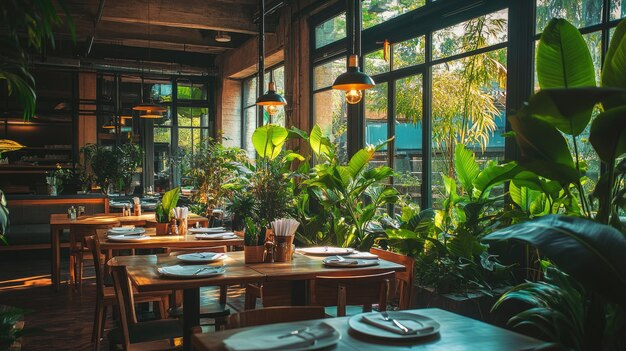
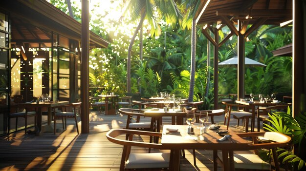
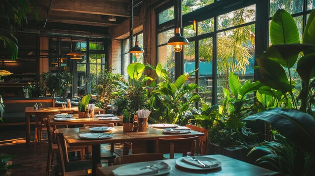
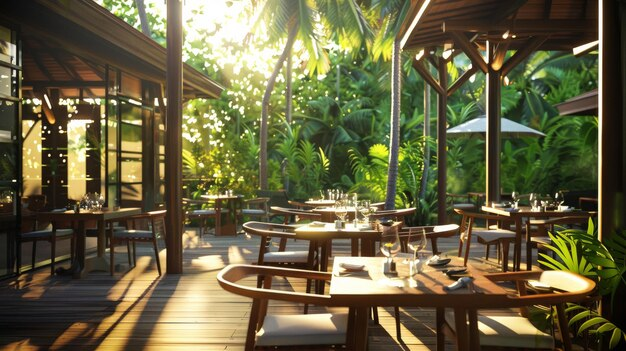

NOSSOS AMBIENTES
 



SOBRE
O restaurante Oca é um espaço sofisticado e acolhedor, inspirado nas tradições e raízes brasileiras. Com um conceito que valoriza a simplicidade e a conexão com a natureza, o Oca oferece um cardápio de comidas naturais e regionais, destacando ingredientes frescos e orgânicos, cuidadosamente selecionados de produtores locais. A proposta é proporcionar uma experiência gastronômica autêntica e saudável, com pratos que celebram a diversidade dos sabores do Brasil. Nossos ambientes são elegantes e integrados à natureza, criando um refúgio urbano que combina sofisticação, sustentabilidade e a riqueza da culinária brasileira.